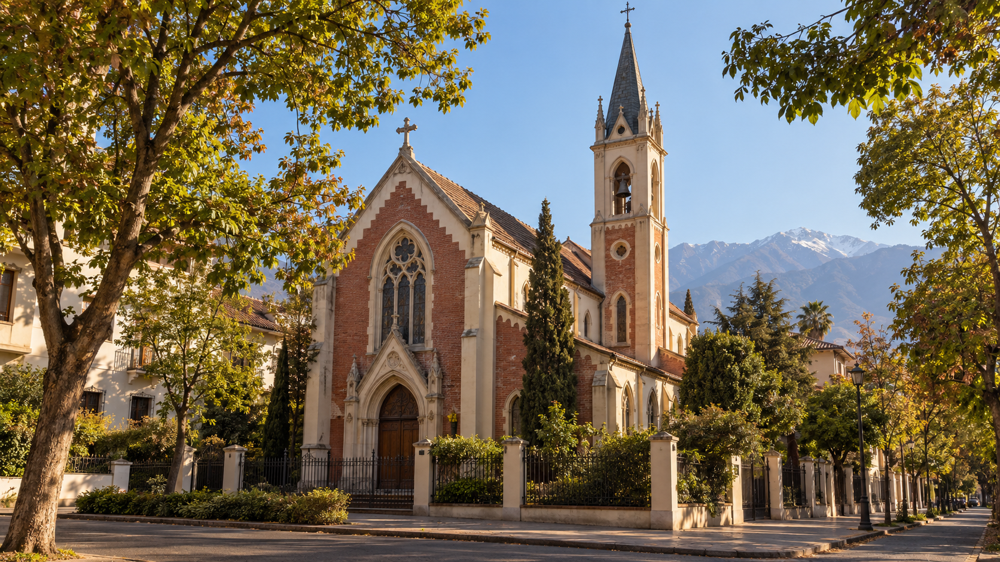

El Reverendo Padre Prior, don Carlos Caliri, ha dispuesto que escriba algunas palabras en conmemoración del cuadragésimo aniversario de la fundación del Priorato de Cristo Rey, de la Fraternidad Sacerdotal San Pío X, en nuestra ciudad de Santiago.
He acatado este requerimiento con una profunda gratitud, por el honor que ello significa. Lo acepto también con emoción, al considerar que han de ser pocas, ya, las ocasiones en que pueda exponer ante ustedes mis sentimientos al referirme a nuestro Priorato y, por su causa, a la Fraternidad Sacerdotal y a su venerado Fundador, Su Excelencia Reverendísima Monseñor Marcel Lefebvre, verdaderamente un Confesor de la Fe, y ciertamente un Mártir de la misma, si se atiende a la similitud que en griego existe entre este vocablo y el de testigo.
En una medida considerable, no he querido innovar mis observaciones respecto de las que hiciera hace veinte años, al celebrar el Priorato igual número de anualidades desde su Fundación. Los hechos en que todas ellas se basan son los mismos – básicamente el combate en defensa de la Fe – y su progresión sobre la cual he de incidir en el curso de esta intervención – avanza en igual sentido trágico al de aquella oportunidad les asignara.
Estas simples observaciones no presumen ser una crónica, o una lección de Historia o de cualquiera otra ciencia. Sólo constituyen la expresión de mis sentimientos y de mi experiencia personal al revisar los hechos que inciden en la fundación y preservación de la Fraternidad Sacerdotal creada por el venerado señor Arzobispo y, por consecuencia, en la erección y desarrollo del Priorato de Santiago.
«Aquella capilla era hermosa. Sin perjuicio de su pequeñez, su edificio observaba fielmente las líneas del gótico cisterciense inglés.»

Cuánto quisiera al exponerlas – y respetando ciertamente la proporción de las cosas – que de ellas pueda decirse – como lo precisa el Juramento Antimodernista – que participan del “verdadero asentimiento de la inteligencia a la verdad adquirida extrínsecamente, asentimiento por el cual creemos verdadero, a causa de la autoridad de Dios cuya veracidad es absoluta, todo lo que ha sido dicho, atestiguado y revelado por el Dios personal, nuestro creador y nuestro Señor”.
1. Los comienzos
En concordancia con lo expuesto quiero hoy, al igual como lo hice hace veinte años, dirigir mis recuerdos a aquel domingo 19 de Julio de 1986, cuando ante la estupefacción general dos jóvenes sacerdotes de la Fraternidad Sacerdotal San Pío X – los Reverendos Padres Víctor Camacho y Carlos Ramírez – restituían a la Fe católica la pequeña capilla sita en el número 105 de la calle de Chile España, en la comuna de Ñuñoa. En ese empeño los acompañaba, ya mayor, Fray Aurelio Villarroel Gamboa, de la benemérita Orden de los Predicadores. En aquel día venturoso para nuestra Patria, la sede propia y rodeada del Pueblo Fiel, la Fraternidad ofrecía al Eterno Padre su Primera Misa Solemne en nuestro país, entre las muchas que posteriormente marcarían su apostolado. El Santo Sacrificio concluiría con el Te Deum ambrosiano, cantado en medio de la emoción de los presentes.
Aquella capilla era hermosa. Sin perjuicio de su pequeñez, su edificio observaba fielmente las líneas del gótico cisterciense inglés, conforme lo dispusiera Don Bernardo Gentilini, sacerdote salesiano, quien la erigió en 1929. Sus siete maravillosas vidrieras policromadas, fiel expresión del arte sacro, fueron talladas en Francia y hoy se emplazan en el actual templo del Priorato, en cuyas dependencias nos encontramos.
2. Una nueva etapa
Ciertamente, la fundación del Priorato era para nuestra feligresía el inicio de una nueva y admirable etapa en la profesión de la Fe. Para varios de nosotros era también la culminación de un empeño iniciado veinte años antes, en la desoladora década de 1960. Esta se distingue como una de las más trágicas de la Era Cristiana, pues durante su curso fue celebrado el Concilio Vaticano II, susceptible de ser estimado un mero conciliábulo por los errores, divagaciones y perversiones de su doctrina.
3. Recuerdos de infancia
En mi caso, mientras se desarrollaba la Santa Misa, la memoria me transportaba a mis años de infancia – en los inicios de la década de 1950 – transcurridos al amparo del Convento de los Reverendos Padres Capuchinos de Constitución.
En él los niños conocimos la solemnidad de los ritos de nuestra Santa Madre la Iglesia, la privacidad de sus frailes regulares y, por cima de ello, recibimos la instrucción que nos permitió incorporarnos al Pequeño Clero, esto es, a los monaguillos que asisten al celebrante en las funciones sagradas, particularmente en el Santo Sacrificio de la Misa. En el ejercicio de ese ministerio angélico – así lo proclamó el Papa San Pío X – aprendí a amar la Sagrada Liturgia y a embelesarme en la magnificencia de su rito, que creíamos intangible. Desde muy pequeño veía con emoción al sacerdote, el cual al lavar sus manos repetía silenciosamente con el salmista: “Domine, dilexi decorem domus tuae et locum habitationem in gloria tuae” (“Amé, Señor, la hermosura de Tu casa y el lugar donde reside Tu Gloria”). Del mismo modo, el rezo del Gloria, o su entonación por el Coro en la Misa Cantada, nos hacían detener con particular fe en las aclamaciones del Gloria “Quoniam tu solus Sanctus, tu solus Dominus, tu solus Altissimus, Jesu Christe”. (“Porque Tú solo eres el Santo, Tú sólo el Señor, Tú solo el Altísimo, Jesucristo”).
Desde mi infancia pude comprender la maravillosa concepción del Sacrificio de la Santa Misa, la proclamación diaria e indefectible de la Fe por aplicación del Rito observado perpetuamente en Occidente para su celebración, y la dignidad insigne del templo sacrificial, “Domus Dei et Porta Coeli” (“Casa de Dios y Puerta del Cielo”), conforme lo invoca el Génesis.
También desde mi infancia me impuse de algunas modificaciones litúrgicas singulares, las cuales no constituían una ruptura con el orden precedente, sino que procuraban – dicho grosso modo – una participación más activa de los fieles, de acuerdo a las orientaciones de los insignes Pontífices San Pío X y Pío XII, ambos de venerada y feliz memoria. Es el caso, entre otras, de las alteraciones a los Ritos de Semana Santa, preparadas inicialmente por una comisión presidida por el Eminentísimo Cardenal Clemente Micara y aplicadas en plenitud a partir de 1957. En dichos ritos me correspondió acólitar antes, incluso, de su reforma. De igual modo, pude conocer el realce que se imprimió a la misa dialogada en alta voz, si bien siempre en idioma latín.
(continuará en el siguiente número del boletín)
El ejemplar proporcionado termina aquí, tal como en la página impresa.